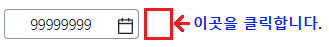

[InputCalendar] 유효하지 않은 값이 입력된 경우 메시지를 팝업하고 직전 값으로 되돌리기
1개요
입력값이 유효한 날짜가 아닌 경우 개발자가 정의 한 팝업에 메시지를 출력하고 직전 값으로 되돌리는 예제입니다.
2구현된 기능
입력값이 유효한 날짜가 아니면 팝업에 메시지를 출력하고 직전 값으로 되돌리기
3예제 테스트 방법
3.1입력값이 유효한 날짜가 아니면 팝업에 메시지를 출력하고 직전 값으로 되돌리기
- STEP1. 초기 입력값을 확인합니다.
영역 [유효성 체크]의 InputCalendar의 초기 값을 확인합니다.
초기 값은 예제 파일이 실행된 날짜가 출력됩니다.
[브라우저(Chrome) 실행 예시]
- STEP2. 유효하지 않은 날짜를 입력합니다.
InputCalenar에 "99999999"를 입력합니다.
[브라우저(Chrome) 실행 예시]

- STEP3. 컴포넌트의 외부 영역을 클릭하여 커서를 제거합니다.
[브라우저(Chrome) 실행 예시]

- STEP4. 실행 결과를 확인합니다.
메시지가 팝업에 출력되는 것을 확인합니다.
[브라우저(Chrome) 실행 예시]
- STEP5. 팝업을 닫습니다.
팝업의 버튼 [x]를 클릭하여 팝업을 닫습니다.
[브라우저(Chrome) 실행 예시]
- STEP6. 실행 결과를 확인합니다.
InputCalendar의 입력값이 직전 값으로 복원된 것을 확인합니다.
[브라우저(Chrome) 실행 예시]

4구현 예시
4.1입력값이 유효한 날짜가 아니면 팝업에 메시지를 출력하고 직전 값으로 되돌리기
STEP1. InputCalendar의 속성을 정의합니다.
[필수] dateValidSet="true" //[default:false, true] 입력된 날짜 값의 유효성을 확인하여, 유효하지 않을 경우 이전 값으로 복귀.
[필수] dateValidSetCustom="true" //[default:false, true] 유효하지 않는 값이 입력된 경우, invalidMessageFunc만 호출.
[필수] invalidMessageFunc="함수명" //속성 dateValidSetCustom이 활성화된 경우 유효하지 않은 값이 입력되면 호출할 함수명
예시) invalidMessageFunc="scwin.inputCalendar_invalidMessageFunc"
[필수] validateOnInput="true" //[default:false, true] 값을 직접 입력할 때 숫자만 입력 허용. oninput 이벤트에서 처리.
[필수] validateOnInputMobile="true" //[default:false, true] 값을 직접 입력할 때 숫자만 입력 허용. 모바일 전용. onkeyup 이벤트에서 처리.
속성 dateValidSet 기능을 사용하기 위해 속성 validateOnInput, validateOnInputMobile을 필수로 지정해야 하는 것은 아닙니다.
2022.10.04 기준 입력값이 한글로만 구성된 경우 속성 dateValidSet 기능이 적용되지 않고 빈 값으로 할당되어 숫자만 입력할 수 있는 속성인 validateOnInput, validateOnInputMobile을 지정하였습니다.
그림 1.웹스퀘어5 SP5 스튜디오의 Property View(속성창) 예시
[소스 코드 예시]
<!-- inputCalendar 의 소스 본문 예시 --> <w2:inputCalendar dateValidSet="true" dateValidSetCustom="true" invalidMessageFunc="scwin.inputCalendar_invalidMessageFunc" validateOnInput="true" validateOnInputMobile="true" calendarValueType="yearMonthDate" id="ica_exam_1"> </w2:inputCalendar>
STEP2. 속성 "invalidMessageFunc"에 지정한 함수를 정의합니다.
[소스 코드 예시]
/** * inputCalendar [ica_exam_1]의 속성 invalidMessageFunc에 정의 * 유효하지 않은 날짜가 입력된 경우 엔진에서 호출합니다. */ scwin.inputCalendar_invalidMessageFunc = function() { var strTarget; var jsnPopParam; var jsnPopDataObjectsnPopParam; var jsnPopOptions; //컴포넌트 ID //this.callerId //대상 InputCalendar의 ID로 컴포넌트 객체 반환 받기 strTarget = $p.getComponentById(this.callerId); //팝업에 전달할 데이터 jsnPopParam = { "inputData" : strTarget.getValue() //입력값 전달 }; //팝업에 전달한 데이터 객체 정보 jsnPopDataObjectsnPopParam = { "type" : "json", // 데이터 타입. "json" 권장 "name" : "p_param", // 데이터를 가져오기 위한 key 값. popup에서 $p.getParameter("p_param")로 반환 받을 수 있습니다. "data" : jsnPopParam // 실제 전달할 데이터 }; //팝업 객체 정보 jsnPopOptions = { "id" : "popup_P00130P01", "type" : "wframePopup", "modal" : true, "frameModal" : true, "width" : "270px", "height" : "160px", "popupName" : "유효성 체크 메시지", "left" : strTarget.getPosition("left"), //inputCalendar의 left 값 "top" : strTarget.getPosition("top"), //inputCalendar의 top 값 "dataObject" : jsnPopDataObjectsnPopParam //팝업에 전달할 데이터 객체 정보 }; //팝업 열기 $p.openPopup("/page/P00130P01.xml", jsnPopOptions ); //직전 값으로 복원. strTarget.setValueCancel(); };
- ETC. 팝업의 주요 스크립트
메시지를 출력하는 팝업에서는 부모창에서 받은 데이터 객체를 출력하기만 합니다.
화면이 로딩되면 파라미터를 받아 InputCalendar의 입력값을 출력합니다.
팝업 구성에 대한 세부 내용은 생략되었습니다.
예제 파일 "/page/P00130P01.xml"을 참고해주시기 바랍니다.
[소스 코드 예시]
/** * 페이지 로드 완료 시 호출 */ scwin.onpageload = function() { var jsnPopParam; var strInputValue; //부모창에서 전달한 데이터 객체명 "p_param"으로 파라미터 반환 jsnPopParam = $p.getParameter("p_param"); //InputCalendar의 사용자 입력값 추출 strInputValue = jsnPopParam.inputData; //span "tbx_msg"에 입력값 출력 tbx_msg.setValue(strInputValue); };
5주요 API
dateValidSet
dateValidSetCustom
validateOnInput
validateOnInputMobile
6참고 문서
[웹스퀘어5 SP5 개발 가이드] InputCalendar
링크 : https://docs1.inswave.com/sp5_user_guide/8df43d1f59fab704#579244ff7483b50c
[웹스퀘어5 SP5 개발 가이드] InputCalendar - 입력 날짜 검증
링크 : https://docs1.inswave.com/sp5_user_guide/8df43d1f59fab704#8266c6f39460d50b
[웹스퀘어5 SP5 개발 가이드] InputCalendar - dateValidSetCustom & setValueCancel()
링크 : https://docs1.inswave.com/sp5_user_guide/8df43d1f59fab704#04c8f414f1d13e67
7참고 동영상
InputCalendar - dateValidSetCustom & setValueCancel()